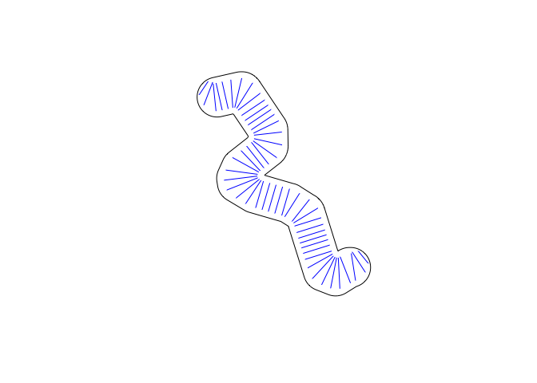

The purpose of sxchan is to create and manipulate watercourse geometries, with a focus on cross sections. Because this package sits on top of the sf package, geometries can also be manipulated in the same way as in the sf package.
The name of the package is inspired by the sf package. Functions in sxchan start with a common prefix, xt, which stands for “cross-section type”; this is intended to parallel the sf package’s function prefix, st, which stands for “spatial type”.
Installation
You can install the development version of sxchan from GitHub with:
# install.packages("devtools")
devtools::install_github("stochaGBEM/sxchan")Example
Constructing cross section objects
Cross section objects can be made using the function xt_sxc(), where “sxc” stands for “spatial cross-section column”.
- Simply specify cross section width if you’re not interested in the spatial arrangement of the cross sections:

- Or, you can turn a series of line segments into a cross section object. This time, set a coordinate reference system, too:
seg <- st_linestring(matrix(c(0, 1, 0, 1), ncol = 2))
cross2 <- xt_sxc(seg, crs = 3005)
plot(cross2)Retrieve widths:
xt_width(cross1)
#> [1] 8 7 5 6 5 8
xt_width(cross2)
#> 1.414214 [m]Because these cross sections are just sfc objects from the sf package, you can add features by making it an sf object:
# st_sf(cross1, swimmability = c(5, 4, 3, 2, 1, 0), roughness = 0.01)Generating geometries from bankline polygon
sxchan has a built-in demo bankline polygon:
plot(demo_bankline)You can generate cross sections and a centerline:
demo_cross <- xt_generate_sxc(demo_bankline, n = 50)
demo_center <- xt_generate_centerline(demo_bankline)
plot(demo_bankline)
plot(demo_cross, add = TRUE, col = "blue")
plot(demo_center, add = TRUE)You can widen the cross sections, either by a constant amount or one per cross section:
plot(demo_bankline)
xt_widen_times(demo_cross, times = 0.7) |>
plot(add = TRUE, col = "blue")